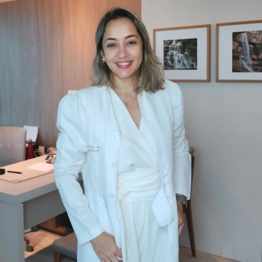

Início · Sobre
Dra. Jessy Gomes.
Jessy Janne de Lima Gomes, endocrinologista em Salvador, com título de especialista em Endocrinologia e Metabologia (RQE 11243) e em Clínica Médica (RQE 8781). Atende na Torre Norte do Salvador Trade Center e no Centro Médico São Rafael.
Apresentação
Quem é

“Cuide de seu maior patrimônio: VOCÊ!”
Título do site da Dra. Jessy · ver a fonte
Endocrinologista em Salvador, a Dra. Jessy acompanha diabetes, doenças da tireoide, distúrbios hormonais, peso e metabolismo, e publica conteúdo sobre treino e desempenho no Instagram.
Antes da endocrinologia, fez residência em Clínica Médica, o que ajuda a olhar o paciente inteiro.
Registro
Registro e títulos
CRM-BA 18968
Registro no Conselho Regional de Medicina da Bahia.
RQE 11243
Título de especialista em Endocrinologia e Metabologia.
RQE 8781
Título de especialista em Clínica Médica.
CNES
Cadastrada como médica endocrinologista e metabologista desde 2015.
Fontes: localizador de médicos da Rede D'Or, perfil na Doctoralia e CNES.
Trajetória
Trajetória
- 2007 · CearáMédica de saúde da família em Caucaia e clínica geral em Sobral (CE).
- 2008–2010 · Residência em Clínica MédicaHospital Santo Antônio, em Salvador.
- Residência em EndocrinologiaSeguida do título de especialista em Endocrinologia e Metabologia, RQE 11243.
- 2015 · Endocrinologista em SalvadorAtuação em hospitais e clínicas da cidade, registrada no CNES.
- Desde 2018 · Hospital São RafaelAtende no Hospital São Rafael e no Centro Médico São Rafael, da Rede D'Or.
- Hoje · Salvador Trade CenterConsultório na Torre Norte, sala 1105, no Caminho das Árvores.
Nas palavras dela
O jeito de atender
“Meu propósito é oferecer cuidados endocrinológicos de alta qualidade, focando na saúde e bem-estar dos nossos pacientes. […] um atendimento personalizado e baseado em evidências […]”
Site da Dra. Jessy · ver a fonte
Nas respostas a pacientes, o tom é o mesmo do consultório: próximo e caloroso.
“Obrigada pelo carinho e reconhecimento Sabrina! Foi um prazer lhe atender e sempre estou à disposição! Grande beijo!”
Resposta da Dra. Jessy na Doctoralia, 2021 · ver a fonte

Conteúdo
No Instagram
No perfil @drajessygomes, com quase 10 mil seguidores e cerca de 800 publicações, a Dra. Jessy fala de endocrinologia, treino e desempenho, sempre com o convite para levar a dúvida à consulta.
“Quer saber se faz sentido pra você? Agende sua consulta! 📅”
Legenda no Instagram · ver a fonte
Dúvidas frequentes
Perguntas comuns
Qual é o registro da Dra. Jessy?
CRM-BA 18968, com RQE 11243 em Endocrinologia e Metabologia e RQE 8781 em Clínica Médica.
Onde ela fez residência em Clínica Médica?
No Hospital Santo Antônio, em Salvador, de 2008 a 2010, segundo o CNES.
Ela atende em hospital?
Sim. Atende no Hospital São Rafael desde 2018 e no Centro Médico São Rafael, da Rede D'Or.
Onde fica o consultório?
Na Torre Norte do Salvador Trade Center, sala 1105, Av. Tancredo Neves, 1632, Caminho das Árvores.
Agende
Cuide de seu maior patrimônio: você.
Consulta com hora marcada na Torre Norte do Salvador Trade Center, sala 1105, no Caminho das Árvores. Fale com o consultório pelo WhatsApp (71) 99386-4142.